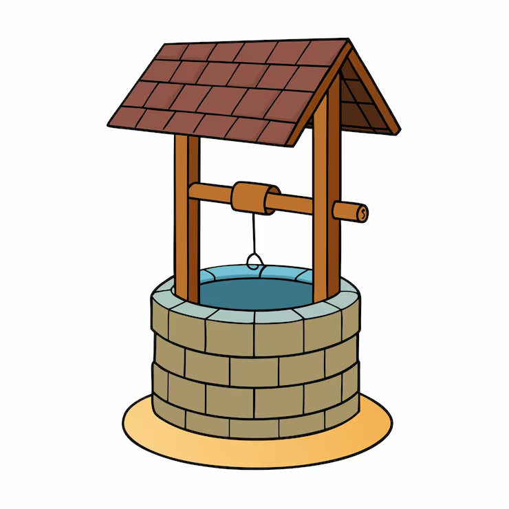

Free Bitcoins
|  |
The Bitcoin Well |
Current well balance: 0.8 BTC
This well will send you 0.0000756 BTC (~$5 USD) of free bitcoins once every 24 hours.
Bitcoins are a new kind of money. They aren't created or controlled by a government (like dollars or euros), they're created and controlled by anybody who wants to be part of the Bitcoin payment network. Visit the Bitcoin.org website for all the geeky details.
Download and install the Bitcoin program from www.bitcoin.org. At the top of its main window it will show you Your Bitcoin Address.
Send them to the Bitcoin Well at address 15VjRaDX9zpbA8LVnbrCAFzrVzN7ixHNsC and they'll be given away. It may take up to 30 minutes for your donation to be added to the amount available.
No catch-- I want Bitcoin to be successful, so I created this little service to give you a few coins to start with. -- gavin